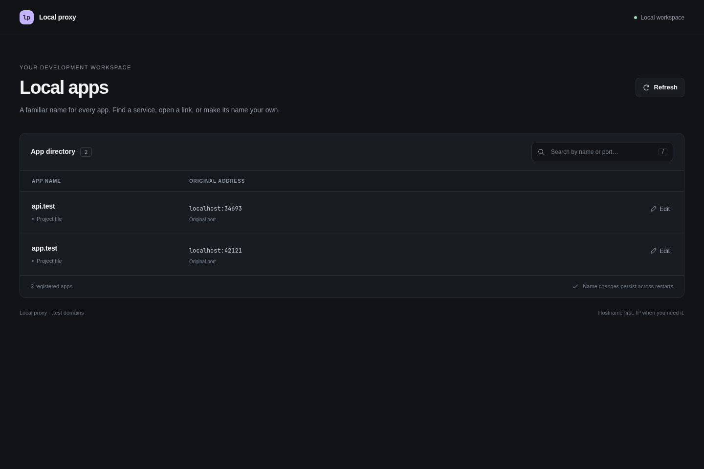

Local names. Less friction.
A small Go CLI, Caddy routing, and one directory for every local app.
Keep the port. Give it a name.
Localproxy is a Go CLI that generates and reloads Caddy routes. Register a name yourself, load names from a project file, or discover listening HTTP apps and give them random names. The directory keeps the registered domain and original localhost address together.
# proxy.yaml
app: 3000
api: 8080These register app.test and api.test. Browser URLs also need local DNS and certificate trust, and HTTPS depends on the client’s wildcard compatibility. The reserved name home.test opens the directory. A configurable suffix lets you use names such as app.dev.test.
Start with the isolated demo: it uses temporary files and high ports, and needs no DNS changes or system certificate installation. The TLS compatibility note explains why its HTTPS walkthrough uses .dev.test.
Build your local workflow
YAML or JSON defaults, with persistent CLI and browser overrides.
02 / DISCOVERAn editable directory ↗Search, copy an address, rename with confirmation, and undo.
03 / CONNECTSee your Tailscale URLs ↗Existing hostname and IP links, with availability made explicit.
04 / AUTOMATEUse the CLI ↗Look up domains, export configuration, and use JSON or YAML in your scripts.
A directory you can work from
{kind=link}

See a name change, end to end
Search for an app, edit its name, confirm the change, and use Undo to restore it. The localhost port stays the same throughout.
Read the demo walkthrough
- The directory shows api.test and app.test, each with its original localhost URL.
- Searching for api filters the directory to the matching app.
- Clear the search, edit app.test, and enter storefront.
- Save opens a confirmation showing app.test becoming storefront.test.
- Confirm the rename. The new domain appears with the original port, and the success message offers Undo.
- Undo restores app.test and its route.
Use the same names in your tools
localproxy add app 3000
localproxy lookup http://localhost:3000
# app.test
localproxy lookup 3000 --json
localproxy config export --format yamlUse JSON or YAML in scripts, look up a domain from a localhost URL, and export the full configuration. Names from project files remain defaults until you override them.
What runs where
Caddy handles application traffic. The Go CLI manages the registry and configuration; an optional Go HTTP server provides the editable directory. Generated app listeners bind to loopback. Tailscale integration displays existing access paths and does not expose localhost apps.
The current implementation is Linux-oriented: discovery uses ss, registry locking uses Unix file locks, and the machine setup script targets Arch/Omarchy.
These documentation pages and demo media are public. The application source repository is currently private; building and running the CLI requires repository access. The quickstart documents the workflow for people with access.